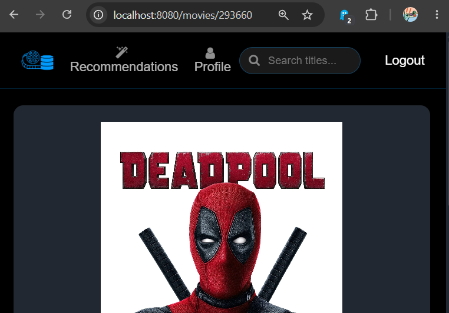
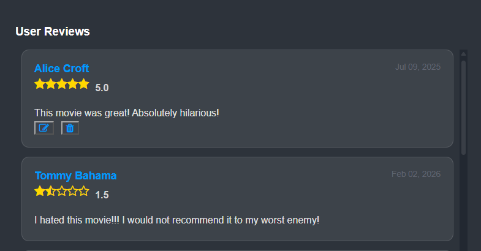
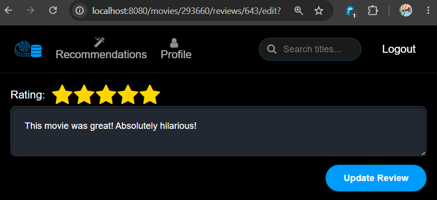
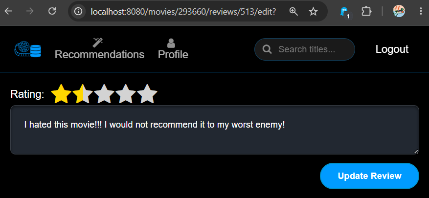
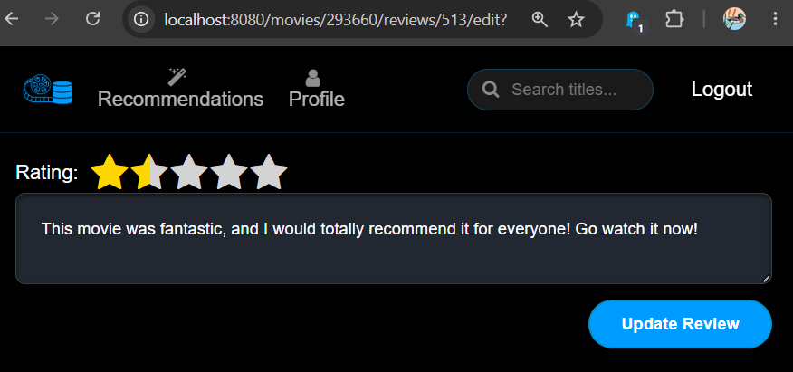
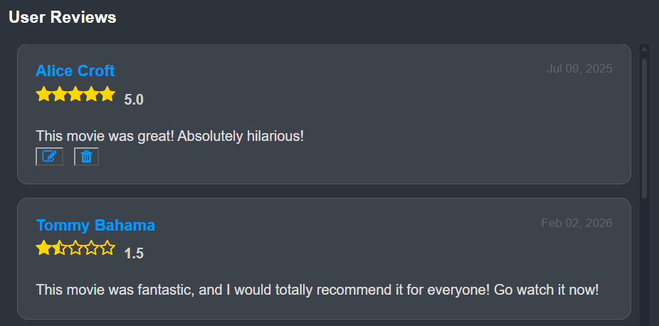
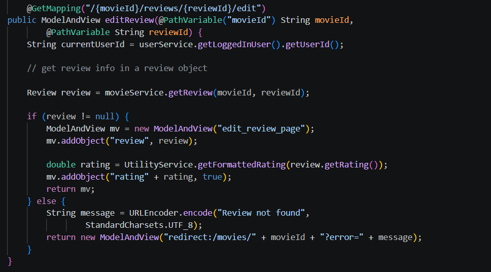
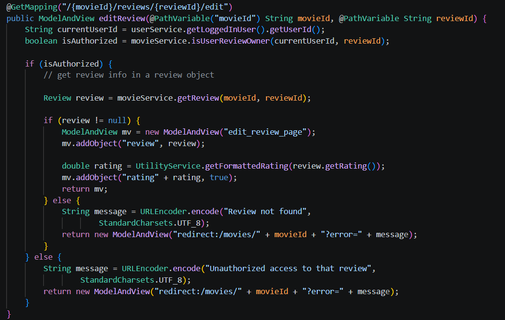
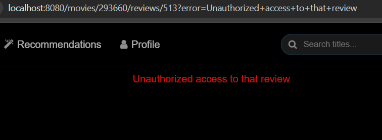

What is IDOR?
Insecure Direct Object Reference (IDOR) is a vulnerability that occurs when an application lacks sufficient access control checks to verify whether a user should have access to specific data. In turn, attackers can exploit these vulnerabilities to access and sometimes even modify resources belonging to other users.
Consider the following example from a previous group project of mine:



In the first screenshot, we can see the url localhost:8080/movies/293660, and we can
guess that the movie shown is attached to the ID 293660. Similarly, from the subsequent images,
we can guess that our review (the one written by Alice Croft) is associated with the ID 643.
Using this information, a hacker could try changing the review's ID in the url to see if the website will allow them to access that review.

From the image, we can see that changing the review's ID to 513 gave us access to edit Tommy Bahama's review, so we can change it however we want.


In this example, any user would be able to craft urls which would allow them to view and modify other users' reviews for any movie. While it could be hard to guess a particular review's ID, a hacker might a script which tries every possible review ID in order to review bomb a particular movie.
In this setting, this attack is mostly inconsequential, but in real-world applications, this attack can be devastating as hackers can exploit these vulernabilities to access or modify sensitive data. For instance, imagine a website where instead of editing a movie review, the user edits the amount they want to transfer to another account.
Fortunately, these attacks can be mitigated.
Defense Against IDOR
Implementing Authorization Checks
The most important way to prevent hackers from exploiting IDOR vulnerabilities is implementing access controls to ensure users are authorized to view and/or modify resources. Consider the code for the previous example:

With this code, any user can access any review with just the movie's ID and the review's ID. However, adding a few simple lines of code can change that:


With these new additions, every user is now required to be the owner of a review to be able to edit it.
Adding Complexity to Identifiers
Using complex identifiers makes it harder for malicious third parties to guess valid identifiers to use for their attacks. Still, using complex identifiers doesn't replace the need for access controls as hackers might be able to gain knowledge of valid identifiers through tactics like social engineering (manipulating people into compromising security) or scripting.
Source:
Insecure Direct
Object Reference (IDOR) by MDN